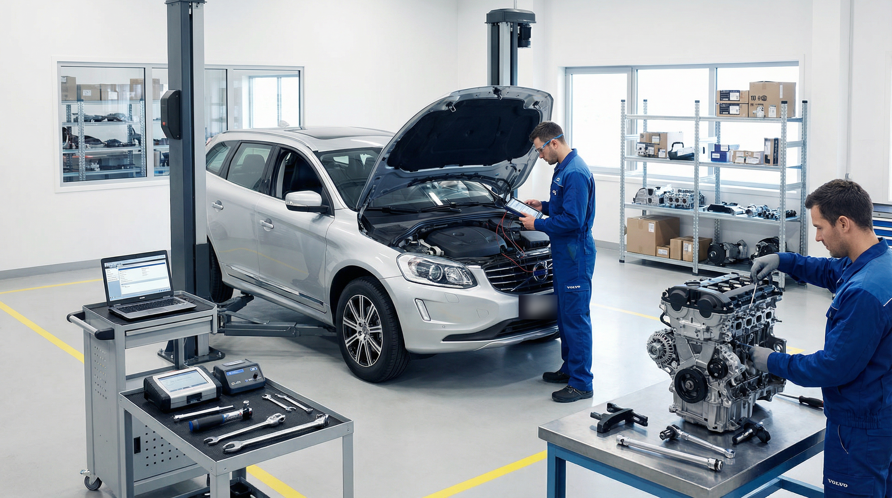

Мойка радиаторов со снятием на Volvo XC90, XC60 и XC70: почему перегревается АКПП и как спасти «бутерброд»

С приходом тепла и первого тополиного пуха тысячи владельцев Volvo сталкиваются со скрытой угрозой: двигатель теряет приемистость, климат-контроль начинает гнать теплый воздух в пробках, а автоматическая коробка передач Aisin отвечает неприятными толчками при переключениях с 1-й на 2-ю и со 2-й на 3-ю передачи. Причина в 95% случаев одна и та же — критическое загрязнение кассеты радиаторов охлаждения («бутерброда»).
Анатомия охлаждения Volvo: как устроен «бутерброд»
В передней части современных моделей Volvo (XC90, XC60, XC70, S90, V90 Cross Country) плотно друг за другом установлены сразу несколько теплообменников:
- Конденсер (радиатор кондиционера): встречает всю грязь, камни и реагенты первым.
- Интеркулер (радиатор охлаждения наддувочного воздуха турбины): отвечает за плотность воздуха, поступающего в цилиндры.
- Основной радиатор охлаждения двигателя (ДВС): в него также встроен контур охлаждения трансмиссионного масла АКПП (теплообменник коробки Aisin).
Зазор между этими радиаторами составляет всего 5–10 мм. В этот узкий зазор через соты первого радиатора затягивает мелкую пыль, пух, песок и противогололедные реагенты. Со временем там образуется настоящий глухой войлочный ковер («шуба»), который полностью блокирует продувку воздухом.
Чем опасен забитый радиатор: скрытые последствия для узлов
Главный удар принимает на себя автоматическая коробка передач Aisin (TF-80SC, TG-81SC). Рабочая жидкость ATF охлаждается через общий радиатор. Если теплообмен нарушен, температура масла АКПП поднимается до 115–125°C.
При таком перегреве масло теряет вязкость, горят фрикционы, деформируются каналы гидроблока и соленоиды, что приводит к дорогостоящему ремонту коробки передач (от 200 000 рублей).
Кроме того, перегрев грозит:
- Перегревом турбокомпрессора: горячий воздух из забитого интеркулера повышает риск детонации и снижает мощность на 15–20%.
- Постоянной работой вентилятора на максимуме: блок управления вентилятором перегревается и сгорает.
- Деформацией ГБЦ: перегрев головки блока цилиндров на алюминиевых моторах Drive-E чреват пробоем прокладки и ведением привалочной плоскости.
Почему поверхностная мойка на мойке керхером — это фатальная ошибка?
Многие автовладельцы пытаются сэкономить и просят мойщиков на автомойке направить струю аппарата высокого давления через решетку радиатора. Это грубейшая ошибка по двум причинам:
- Замятие сот: давление струи 140–180 бар мгновенно сминает тончайшие алюминиевые ламели радиатора кондиционера, превращая его в глухой металлический щит.
- Запрессовка грязи: вода не вымывает войлок наружу, а лишь плотнее утрамбовывает пух и песок вглубь между сотами, превращая грязь в монолитную корку.
Правильная технология мойки со снятием в техцентре VL Prime
Единственный безопасный и действенный метод восстановить заводское охлаждение — это полная разборка пакета с индивидуальной промывкой каждого радиатора:
- Откачка хладагента: на профессиональной автоматической станции откачивается и сохраняется фреон из системы кондиционирования.
- Аккуратный демонтаж переднего бампера и кассеты радиаторов: без повреждения защелок и проводки парктроников.
- Разъединение радиаторов: каждый теплообменник отделяется и осматривается на предмет течей и коррозии.
- Химическая обработка: нанесение специального очистителя радиаторов без щелочи (обычная щелочная пена разъедает алюминий). Состав бережно растворяет масляные отложения и распушает войлок.
- Бережная гидроочистка: промывка струей воды низкого давления строго под углом 90° к сотам.
- Сборка и заправка: замена уплотнительных колец кондиционера, вакуумирование системы, заправка хладагентом и новым маслом для компрессора, заливка свежего оригинального антифриза.
Подарите вашему Volvo чистое охлаждение перед летом
Комплексная мойка радиаторов со снятием в VL Prime занимает около 3 часов. Мы восстановим штатную производительность кондиционера, защитим АКПП от перегрева и дадим полную гарантию на выполненные работы.
Записаться на мойку радиаторов